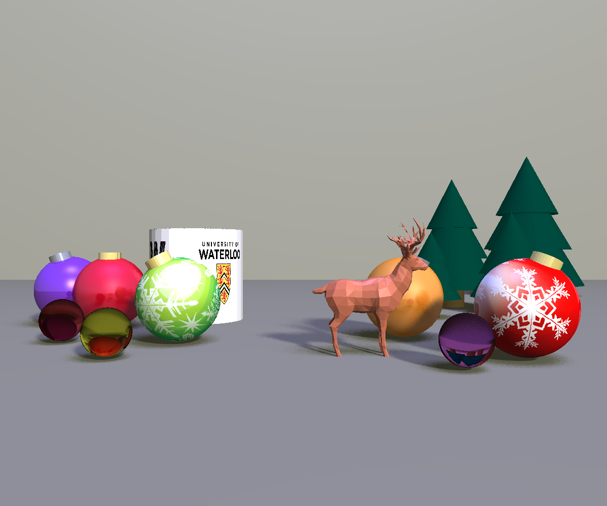

CS488 Project: Ray Tracer
A ray traver written in C++ that render scenes with a Lua file. Written for CS488 Computer Graphics in University of Waterloo

A ray traver written in C++ that render scenes with a Lua file. Written for CS488 Computer Graphics in University of Waterloo